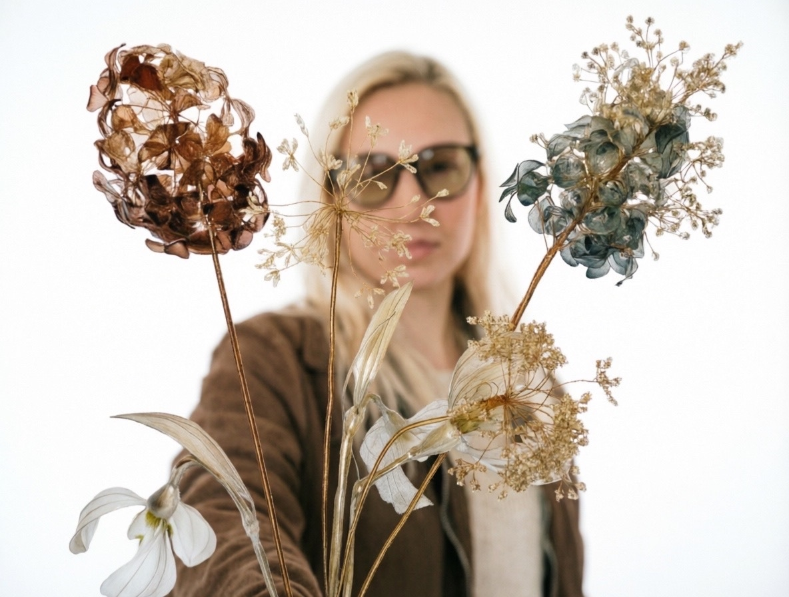

Акцент на пальто, платье или сумке. Цвет на выбор.
Лаборатория света и глянца · стеклофлористика · ручная работа
Цветы, которые
не завянут никогда
Карамельные цветы и украшения из смолы — прозрачные, как леденец. Не вянут, не требуют ухода. Навсегда.
✦ Хрупкие, но прочные
✦ Играют на свету
✦ Ручная роспись

Процесс
Как рождается
один цветок
От куска проволоки до готового стеклоцветка — посмотрите, как он оживает в лаборатории света и глянца.
- Каркас. Гнём проволоку — рождаются лист и бутон.
- Лепестки. Формируем глиной каждый лепесток.
- Погружение. Опускаем в смоляной состав — цветок обретает прозрачность.
- УФ-закалка. Фиолетовый свет делает глину твёрдой, как стекло.
- Роспись. Кисть добавляет живой цвет — цветок начинает играть на свету.
Каркас
Каталог цветов
Цветы ручной работы
Каталог украшений
Не только букеты
Свадебные и вечерние украшения, броши, серьги, кулоны, заколки и флажки — всё из той же лаборатории света и глянца.
Лёгкие серьги-цветы. Гипоаллергенная фурнитура.
✺
Мелкие детали образа и интерьера — под настроение, наряд или особый день.
Заказать
Соберём букет,
украшение или аксессуар под вас
Расскажите, что хочется — цветок, цвет, повод. Меня зовут Александра, я отвечу в течение дня и подберу вариант под ваш образ, бюджет и дату.
О мастерской
Glazur Lab — лаборатория света и глянца
Glazur Lab — лаборатория света и глянца. Меня зовут Александра, я создаю стеклофлористику, украшения и аксессуары из смолы и глины.
В каталоге — интерьерные цветы, свадебные и вечерние украшения, броши, серьги, кулоны, заколки, флажки и подвесы. Всё вручную, каждая работа уникальна. Заказать можно через форму или в группе glazur_lab. Отвечаю в течение дня.
Вопросы и ответы
- Что такое стеклофлористика?
- Цветы из ювелирной смолы и полимерной глины. Выглядят, как стекло, но прочные и не вянут.
- Что можно заказать?
- Интерьерные букеты, свадебные и вечерние украшения, броши, серьги, кулоны, подвесы, заколки, флажки. Цвет и дизайн — под заказ.
- Как сделать заказ?
- Через форму на сайте или в группе ВКонтакте glazur_lab. Опишите цветок, цвет и повод — отвечу в течение дня.
- Как ухаживать?
- Уход не требуется. Протирайте пыль сухой тканью, не ставьте на прямое солнце и не роняйте.